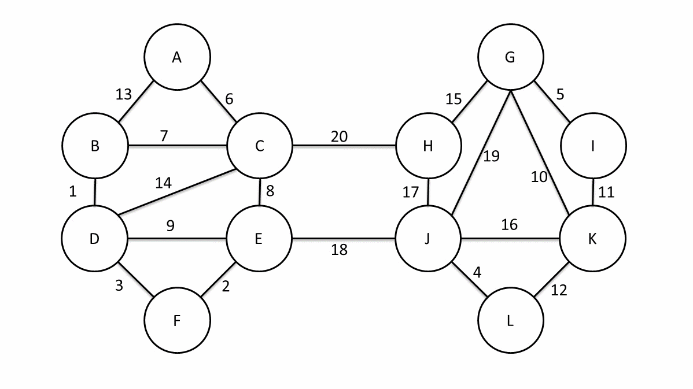

定义
在阅读下列内容之前，请务必阅读 图论基础 与 树基础 部分，并了解以下定义：
- 生成子图
- 生成树
我们定义无向连通图的 最小生成树 （Minimum Spanning Tree，MST）为边权和最小的生成树。
注意：只有连通图才有生成树，而对于非连通图，只存在生成森林。
Kruskal 算法
Kruskal 算法是一种常见并且好写的最小生成树算法，由 Kruskal 发明。该算法的基本思想是从小到大加入边，是个贪心算法。
前置知识
证明
思路很简单，为了造出一棵最小生成树，我们从最小边权的边开始，按边权从小到大依次加入，如果某次加边产生了环，就扔掉这条边，直到加入了 $n-1$ 条边，即形成了一棵树。
证明：使用归纳法，证明任何时候 K 算法选择的边集都被某棵 MST 所包含。
基础：对于算法刚开始时，显然成立（最小生成树存在）。
归纳：假设某时刻成立，当前边集为 $F$ ，令 $T$ 为这棵 MST，考虑下一条加入的边 $e$ 。
如果 $e$ 属于 $T$ ，那么成立。
否则， $T+e$ 一定存在一个环，考虑这个环上不属于 $F$ 的另一条边 $f$ （一定只有一条）。
首先， $f$ 的权值一定不会比 $e$ 小，不然 $f$ 会在 $e$ 之前被选取。
然后， $f$ 的权值一定不会比 $e$ 大，不然 $T+e-f$ 就是一棵比 $T$ 还优的生成树了。
所以， $T+e-f$ 包含了 $F$ ，并且也是一棵最小生成树，归纳成立。
实现
算法虽简单，但需要相应的数据结构来支持……
具体来说，维护一个森林，查询两个结点是否在同一棵树中，连接两棵树。
抽象一点地说，维护一堆 集合 ，查询两个元素是否属于同一集合，合并两个集合。
伪代码：
$$ \begin{array}{ll} 1 & \textbf{Input. } \text{The edges of the graph } e , \text{ where each element in } e \text{ is } (u, v, w) \ & \text{ denoting that there is an edge between } u \text{ and } v \text{ weighted } w . \ 2 & \textbf{Output. } \text{The edges of the MST of the input graph}.\ 3 & \textbf{Method. } \ 4 & result \gets \varnothing \ 5 & \text{sort } e \text{ into nondecreasing order by weight } w \ 6 & \textbf{for} \text{ each } (u, v, w) \text{ in the sorted } e \ 7 & \qquad \textbf{if } u \text{ and } v \text{ are not connected in the union-find set } \ 8 & \qquad\qquad \text{connect } u \text{ and } v \text{ in the union-find set} \ 9 & \qquad\qquad result \gets result\;\bigcup\ {(u, v, w)} \ 10 & \textbf{return } result \end{array}
$$
其中，查询两点是否连通和连接两点可以使用并查集维护。
如果使用 $O(m\log m)$ 的排序算法，并且使用 $O(m\alpha(m, n))$ 或 $O(m\log n)$ 的并查集，就可以得到时间复杂度为 $O(m\log m)$ 的 Kruskal 算法。
Prim 算法
Prim 算法是另一种常见并且好写的最小生成树算法。该算法的基本思想是从一个结点开始，不断加点（而不是 Kruskal 算法的加边）。
证明
从任意一个结点开始，将结点分成两类：已加入的，未加入的。
每次从未加入的结点中，找一个与已加入的结点之间边权最小值最小的结点。
然后将这个结点加入，并连上那条边权最小的边。
重复 $n-1$ 次即可。
证明：还是说明在每一步，都存在一棵最小生成树包含已选边集。
基础：只有一个结点的时候，显然成立。
归纳：如果某一步成立，当前边集为 $F$ ，属于 $T$ 这棵 MST，接下来要加入边 $e$ 。
如果 $e$ 属于 $T$ ，那么成立。
否则考虑 $T+e$ 中环上另一条可以加入当前边集的边 $f$ 。
首先， $f$ 的权值一定不小于 $e$ 的权值，否则就会选择 $f$ 而不是 $e$ 了。
然后， $f$ 的权值一定不大于 $e$ 的权值，否则 $T+e-f$ 就是一棵更小的生成树了。
因此， $e$ 和 $f$ 的权值相等， $T+e-f$ 也是一棵最小生成树，且包含了 $F$ 。
实现
具体来说，每次要选择距离最小的一个结点，以及用新的边更新其他结点的距离。
其实跟 Dijkstra 算法一样，每次找到距离最小的一个点，可以暴力找也可以用堆维护。
堆优化的方式类似 Dijkstra 的堆优化，但如果使用二叉堆等不支持 $O(1)$ decrease-key 的堆，复杂度就不优于 Kruskal，常数也比 Kruskal 大。所以，一般情况下都使用 Kruskal 算法，在稠密图尤其是完全图上，暴力 Prim 的复杂度比 Kruskal 优，但 不一定 实际跑得更快。
暴力： $O(n^2+m)$ 。
二叉堆： $O((n+m) \log n)$ 。
Fib 堆： $O(n \log n + m)$ 。
伪代码：
$$ \begin{array}{ll} 1 & \textbf{Input. } \text{The nodes of the graph }V\text{ ; the function }g(u, v)\text{ which}\ & \text{means the weight of the edge }(u, v)\text{; the function }adj(v)\text{ which}\ & \text{means the nodes adjacent to }v.\ 2 & \textbf{Output. } \text{The sum of weights of the MST of the input graph.} \ 3 & \textbf{Method.} \ 4 & result \gets 0 \ 5 & \text{choose an arbitrary node in }V\text{ to be the }root \ 6 & dis(root)\gets 0 \ 7 & \textbf{for } \text{each node }v\in(V-{root}) \ 8 & \qquad dis(v)\gets\infty \ 9 & rest\gets V \ 10 & \textbf{while } rest\ne\varnothing \ 11 & \qquad cur\gets \text{the node with the minimum }dis\text{ in }rest \ 12 & \qquad result\gets result+dis(cur) \ 13 & \qquad rest\gets rest-{cur} \ 14 & \qquad \textbf{for}\text{ each node }v\in adj(cur) \ 15 & \qquad\qquad dis(v)\gets\min(dis(v), g(cur, v)) \ 16 & \textbf{return } result \end{array}
$$
注意：上述代码只是求出了最小生成树的权值，如果要输出方案还需要记录每个点的 $dis$ 代表的是哪条边。
Boruvka 算法
接下来介绍另一种求解最小生成树的算法——Boruvka 算法。该算法的思想是前两种算法的结合。它可以用于求解 边权互不相同 的无向图的最小生成森林。（无向连通图就是最小生成树。）
为了描述该算法，我们需要引入一些定义：
- 定义 $E'$ 为我们当前找到的最小生成森林的边。在算法执行过程中，我们逐步向 $E'$ 加边，定义 连通块 表示一个点集 $V'\subseteq V$ ，且这个点集中的任意两个点 $u$ , $v$ 在 $E'$ 中的边构成的子图上是连通的（互相可达）。
- 定义一个连通块的 最小边 为它连向其它连通块的边中权值最小的那一条。
初始时， $E'=\varnothing$ ，每个点各自是一个连通块：
- 计算每个点分别属于哪个连通块。将每个连通块都设为“没有最小边”。
- 遍历每条边 $(u, v)$ ，如果 $u$ 和 $v$ 不在同一个连通块，就用这条边的边权分别更新 $u$ 和 $v$ 所在连通块的最小边。
- 如果所有连通块都没有最小边，退出程序，此时的 $E'$ 就是原图最小生成森林的边集。否则，将每个有最小边的连通块的最小边加入 $E'$ ，返回第一步。
下面通过一张动态图来举一个例子（图源自 维基百科 ）：

当原图连通时，每次迭代连通块数量至少减半，算法只会迭代不超过 $O(\log V)$ 次，而原图不连通时相当于多个子问题，因此算法复杂度是 $O(E\log V)$ 的。给出算法的伪代码：（修改自 维基百科 ）
$$ \begin{array}{ll} 1 & \textbf{Input. } \text{A graph }G\text{ whose edges have distinct weights. } \ 2 & \textbf{Output. } \text{The minimum spanning forest of }G . \ 3 & \textbf{Method. } \ 4 & \text{Initialize a forest }F\text{ to be a set of one-vertex trees} \ 5 & \textbf{while } \text{True} \ 6 & \qquad \text{Find the components of }F\text{ and label each vertex of }G\text{ by its component } \ 7 & \qquad \text{Initialize the cheapest edge for each component to "None"} \ 8 & \qquad \textbf{for } \text{each edge }(u, v)\text{ of }G \ 9 & \qquad\qquad \textbf{if } u\text{ and }v\text{ have different component labels} \ 10 & \qquad\qquad\qquad \textbf{if } (u, v)\text{ is cheaper than the cheapest edge for the component of }u \ 11 & \qquad\qquad\qquad\qquad\text{ Set }(u, v)\text{ as the cheapest edge for the component of }u \ 12 & \qquad\qquad\qquad \textbf{if } (u, v)\text{ is cheaper than the cheapest edge for the component of }v \ 13 & \qquad\qquad\qquad\qquad\text{ Set }(u, v)\text{ as the cheapest edge for the component of }v \ 14 & \qquad \textbf{if }\text{ all components'cheapest edges are "None"} \ 15 & \qquad\qquad \textbf{return } F \ 16 & \qquad \textbf{for }\text{ each component whose cheapest edge is not "None"} \ 17 & \qquad\qquad\text{ Add its cheapest edge to }F \ \end{array}
$$
习题
最小生成树的唯一性
考虑最小生成树的唯一性。如果一条边 不在最小生成树的边集中 ，并且可以替换与其 权值相同、并且在最小生成树边集 的另一条边。那么，这个最小生成树就是不唯一的。
对于 Kruskal 算法，只要计算为当前权值的边可以放几条，实际放了几条，如果这两个值不一样，那么就说明这几条边与之前的边产生了一个环（这个环中至少有两条当前权值的边，否则根据并查集，这条边是不能放的），即最小生成树不唯一。
寻找权值与当前边相同的边，我们只需要记录头尾指针，用单调队列即可在 $O(\alpha(m))$ （m 为边数）的时间复杂度里优秀解决这个问题（基本与原算法时间相同）。
??? note " 例题：POJ 1679"
```cpp
#include <algorithm>
#include <cstdio>
struct Edge {
int x, y, z;
};
int f[100001];
Edge a[100001];
int cmp(const Edge& a, const Edge& b) { return a.z < b.z; }
int find(int x) { return f[x] == x ? x : f[x] = find(f[x]); }
int main() {
int t;
scanf("%d", &t);
while (t--) {
int n, m;
scanf("%d%d", &n, &m);
for (int i = 1; i <= n; i++) f[i] = i;
for (int i = 1; i <= m; i++) scanf("%d%d%d", &a[i].x, &a[i].y, &a[i].z);
sort(a + 1, a + m + 1, cmp);
int num = 0, ans = 0, tail = 0, sum1 = 0, sum2 = 0;
bool flag = 1;
for (int i = 1; i <= m + 1; i++) {
if (i > tail) {
if (sum1 != sum2) {
flag = 0;
break;
}
sum1 = 0;
for (int j = i; j <= m + 1; j++) {
if (a[j].z != a[i].z) {
tail = j - 1;
break;
}
if (find(a[j].x) != find(a[j].y)) ++sum1;
}
sum2 = 0;
}
if (i > m) break;
int x = find(a[i].x);
int y = find(a[i].y);
if (x != y && num != n - 1) {
sum2++;
num++;
f[x] = f[y];
ans += a[i].z;
}
}
if (flag)
printf("%d\n", ans);
else
printf("Not Unique!\n");
}
return 0;
}
```
次小生成树
非严格次小生成树
定义
在无向图中，边权和最小的满足边权和 大于等于 最小生成树边权和的生成树
求解方法
- 求出无向图的最小生成树 $T$ ，设其权值和为 $M$
- 遍历每条未被选中的边 $e = (u,v,w)$ ，找到 $T$ 中 $u$ 到 $v$ 路径上边权最大的一条边 $e' = (s,t,w')$ ，则在 $T$ 中以 $e$ 替换 $e'$ ，可得一棵权值和为 $M' = M + w - w'$ 的生成树 $T'$ .
- 对所有替换得到的答案 $M'$ 取最小值即可
如何求 $u,v$ 路径上的边权最大值呢？
我们可以使用倍增来维护，预处理出每个节点的 $2^i$ 级祖先及到达其 $2^i$ 级祖先路径上最大的边权，这样在倍增求 LCA 的过程中可以直接求得。
严格次小生成树
定义
在无向图中，边权和最小的满足边权和 严格大于 最小生成树边权和的生成树
求解方法
考虑刚才的非严格次小生成树求解过程，为什么求得的解是非严格的？
因为最小生成树保证生成树中 $u$ 到 $v$ 路径上的边权最大值一定 不大于 其他从 $u$ 到 $v$ 路径的边权最大值。换言之，当我们用于替换的边的权值与原生成树中被替换边的权值相等时，得到的次小生成树是非严格的。
解决的办法很自然：我们维护到 $2^i$ 级祖先路径上的最大边权的同时维护 严格次大边权 ，当用于替换的边的权值与原生成树中路径最大边权相等时，我们用严格次大值来替换即可。
这个过程可以用倍增求解，复杂度 $O(m \log m)$ 。
代码
#include <algorithm>
#include <iostream>
const int INF = 0x3fffffff;
const long long INF64 = 0x3fffffffffffffffLL;
struct Edge {
int u, v, val;
bool operator<(const Edge &other) const { return val < other.val; }
};
Edge e[300010];
bool used[300010];
int n, m;
long long sum;
class Tr {
private:
struct Edge {
int to, nxt, val;
} e[600010];
int cnt, head[100010];
int pnt[100010][22];
int dpth[100010];
// 到祖先的路径上边权最大的边
int maxx[100010][22];
// 到祖先的路径上边权次大的边，若不存在则为 -INF
int minn[100010][22];
public:
void addedge(int u, int v, int val) {
e[++cnt] = (Edge){v, head[u], val};
head[u] = cnt;
}
void insedge(int u, int v, int val) {
addedge(u, v, val);
addedge(v, u, val);
}
void dfs(int now, int fa) {
dpth[now] = dpth[fa] + 1;
pnt[now][0] = fa;
minn[now][0] = -INF;
for (int i = 1; (1 << i) <= dpth[now]; i++) {
pnt[now][i] = pnt[pnt[now][i - 1]][i - 1];
int kk[4] = {maxx[now][i - 1], maxx[pnt[now][i - 1]][i - 1],
minn[now][i - 1], minn[pnt[now][i - 1]][i - 1]};
// 从四个值中取得最大值
std::sort(kk, kk + 4);
maxx[now][i] = kk[3];
// 取得严格次大值
int ptr = 2;
while (ptr >= 0 && kk[ptr] == kk[3]) ptr--;
minn[now][i] = (ptr == -1 ? -INF : kk[ptr]);
}
for (int i = head[now]; i; i = e[i].nxt) {
if (e[i].to != fa) {
maxx[e[i].to][0] = e[i].val;
dfs(e[i].to, now);
}
}
}
int lca(int a, int b) {
if (dpth[a] < dpth[b]) std::swap(a, b);
for (int i = 21; i >= 0; i--)
if (dpth[pnt[a][i]] >= dpth[b]) a = pnt[a][i];
if (a == b) return a;
for (int i = 21; i >= 0; i--) {
if (pnt[a][i] != pnt[b][i]) {
a = pnt[a][i];
b = pnt[b][i];
}
}
return pnt[a][0];
}
int query(int a, int b, int val) {
int res = -INF;
for (int i = 21; i >= 0; i--) {
if (dpth[pnt[a][i]] >= dpth[b]) {
if (val != maxx[a][i])
res = std::max(res, maxx[a][i]);
else
res = std::max(res, minn[a][i]);
a = pnt[a][i];
}
}
return res;
}
} tr;
int fa[100010];
int find(int x) { return fa[x] == x ? x : fa[x] = find(fa[x]); }
void Kruskal() {
int tot = 0;
std::sort(e + 1, e + m + 1);
for (int i = 1; i <= n; i++) fa[i] = i;
for (int i = 1; i <= m; i++) {
int a = find(e[i].u);
int b = find(e[i].v);
if (a != b) {
fa[a] = b;
tot++;
tr.insedge(e[i].u, e[i].v, e[i].val);
sum += e[i].val;
used[i] = 1;
}
if (tot == n - 1) break;
}
}
int main() {
std::ios::sync_with_stdio(0);
std::cin.tie(0);
std::cout.tie(0);
std::cin >> n >> m;
for (int i = 1; i <= m; i++) {
int u, v, val;
std::cin >> u >> v >> val;
e[i] = (Edge){u, v, val};
}
Kruskal();
long long ans = INF64;
tr.dfs(1, 0);
for (int i = 1; i <= m; i++) {
if (!used[i]) {
int _lca = tr.lca(e[i].u, e[i].v);
// 找到路径上不等于 e[i].val 的最大边权
long long tmpa = tr.query(e[i].u, _lca, e[i].val);
long long tmpb = tr.query(e[i].v, _lca, e[i].val);
// 这样的边可能不存在，只在这样的边存在时更新答案
if (std::max(tmpa, tmpb) > -INF)
ans = std::min(ans, sum - std::max(tmpa, tmpb) + e[i].val);
}
}
// 次小生成树不存在时输出 -1
std::cout << (ans == INF64 ? -1 : ans) << '\n';
return 0;
}
瓶颈生成树
定义
无向图 $G$ 的瓶颈生成树是这样的一个生成树，它的最大的边权值在 $G$ 的所有生成树中最小。
性质
最小生成树是瓶颈生成树的充分不必要条件。 即最小生成树一定是瓶颈生成树，而瓶颈生成树不一定是最小生成树。
关于最小生成树一定是瓶颈生成树这一命题，可以运用反证法证明：我们设最小生成树中的最大边权为 $w$ ，如果最小生成树不是瓶颈生成树的话，则瓶颈生成树的所有边权都小于 $w$ ，我们只需删去原最小生成树中的最长边，用瓶颈生成树中的一条边来连接删去边后形成的两棵树，得到的新生成树一定比原最小生成树的权值和还要小，这样就产生了矛盾。
例题
???+note "POJ 2395 Out of Hay" 给出 n 个农场和 m 条边，农场按 1 到 n 编号，现在有一人要从编号为 1 的农场出发到其他的农场去，求在这途中他最多需要携带的水的重量，注意他每到达一个农场，可以对水进行补给，且要使总共的路径长度最小。 题目要求的就是瓶颈树的最大边，可以通过求最小生成树来解决。
最小瓶颈路
定义
无向图 $G$ 中 x 到 y 的最小瓶颈路是这样的一类简单路径，满足这条路径上的最大的边权在所有 x 到 y 的简单路径中是最小的。
性质
根据最小生成树定义，x 到 y 的最小瓶颈路上的最大边权等于最小生成树上 x 到 y 路径上的最大边权。虽然最小生成树不唯一，但是每种最小生成树 x 到 y 路径的最大边权相同且为最小值。也就是说，每种最小生成树上的 x 到 y 的路径均为最小瓶颈路。
但是，并不是所有最小瓶颈路都存在一棵最小生成树满足其为树上 x 到 y 的简单路径。
例如下图：
1 到 4 的最小瓶颈路显然有以下两条：1-2-3-4。1-3-4。
但是，1-2 不会出现在任意一种最小生成树上。
应用
由于最小瓶颈路不唯一，一般情况下会询问最小瓶颈路上的最大边权。
也就是说，我们需要求最小生成树链上的 max。
倍增、树剖都可以解决，这里不再展开。
Kruskal 重构树
定义
在跑 Kruskal 的过程中我们会从小到大加入若干条边。现在我们仍然按照这个顺序。
首先新建 n 个集合，每个集合恰有一个节点，点权为 $0$ 。
每一次加边会合并两个集合，我们可以新建一个点，点权为加入边的边权，同时将两个集合的根节点分别设为新建点的左儿子和右儿子。然后我们将两个集合和新建点合并成一个集合。将新建点设为根。
不难发现，在进行 $n-1$ 轮之后我们得到了一棵恰有 $n$ 个叶子的二叉树，同时每个非叶子节点恰好有两个儿子。这棵树就叫 Kruskal 重构树。
举个例子：
这张图的 Kruskal 重构树如下：
性质
不难发现，最小生成树上两个点之间的简单路径上边权最大值 = Kruskal 重构树上两点之间的 LCA 的权值。
也就是说，到点 $x$ 的简单路径上边权最大值 $\leq val$ 的所有点 $y$ 均在 Kruskal 重构树上的某一棵子树内，且恰好为该子树的所有叶子节点。
我们在 Kruskal 重构树上找到 $x$ 到根的路径上权值 $\leq val$ 的最浅的节点。显然这就是所有满足条件的节点所在的子树的根节点。
??? note "「LOJ 137」最小瓶颈路 加强版"
```cpp
#include<bits/stdc++.h>
using namespace std;
const int MAX_VAL_RANGE = 280010;
int n,m,log2Values[MAX_VAL_RANGE + 1];
namespace TR
{
struct Edge
{
int to,nxt,val;
}e[400010];
int cnt,head[140010];
void addedge(int u,int v,int val=0)
{
e[++cnt]=(Edge){v,head[u],val};
head[u]=cnt;
}
int val[140010];
namespace LCA
{
int sec[280010],cnt;
int pos[140010];
int dpth[140010];
void dfs(int now,int fa)
{
dpth[now]=dpth[fa]+1;
sec[++cnt]=now;
pos[now]=cnt;
for(int i=head[now];i;i=e[i].nxt)
{
if(fa!=e[i].to)
{
dfs(e[i].to,now);
sec[++cnt]=now;
}
}
}
int dp[280010][20];
void init()
{
dfs(2*n-1,0);
for(int i=1;i<=4*n;i++)
{
dp[i][0]=sec[i];
}
for(int j=1;j<=19;j++)
{
for(int i=1;i+(1<<j)-1<=4*n;i++)
{
dp[i][j]=dpth[dp[i][j-1]]<dpth[dp[i+(1<<(j-1))][j-1]]?dp[i][j-1]:dp[i+(1<<(j-1))][j-1];
}
}
}
int lca(int x,int y)
{
int l=pos[x],r=pos[y];
if(l>r)
{
swap(l,r);
}
int k=log2Values[r - l + 1];
return dpth[dp[l][k]]<dpth[dp[r-(1<<k)+1][k]]?dp[l][k]:dp[r-(1<<k)+1][k];
}
}
}
using TR::addedge;
namespace GR
{
struct Edge
{
int u,v,val;
bool operator<(const Edge &other)const
{
return val<other.val;
}
}e[100010];
int fa[140010];
int find(int x)
{
return fa[x]==0?x:fa[x]=find(fa[x]);
}
void kruskal()
{
int tot=0,cnt=n;
sort(e+1,e+m+1);
for(int i=1;i<=m;i++)
{
int fau=find(e[i].u),fav=find(e[i].v);
if(fau!=fav)
{
cnt++;
fa[fau]=fa[fav]=cnt;
addedge(fau,cnt);
addedge(cnt,fau);
addedge(fav,cnt);
addedge(cnt,fav);
TR::val[cnt]=e[i].val;
tot++;
}
if(tot==n-1)
{
break;
}
}
}
}
int ans;
int A,B,C,P;
inline int rnd()
{
return A=(A*B+C)%P;
}
void initLog2()
{
for(int i = 2;i <= MAX_VAL_RANGE;i++) {
log2Values[i] = log2Values[i >> 1] + 1;
}
}
int main()
{
initLog2();
cin>>n>>m;
for(int i=1;i<=m;i++)
{
int u,v,val;
cin>>u>>v>>val;
GR::e[i]=(GR::Edge){u,v,val};
}
GR::kruskal();
TR::LCA::init();
int Q;
cin>>Q;
cin>>A>>B>>C>>P;
while(Q--)
{
int u=rnd()%n+1,v=rnd()%n+1;
ans+=TR::val[TR::LCA::lca(u,v)];
ans%=1000000007;
}
cout<<ans;
return 0;
}
```
??? note "NOI 2018 归程" 首先预处理出来每一个点到根节点的最短路。
我们构造出来根据海拔的最大生成树。显然每次询问可以到达的节点是在最小生成树和询问点的最小边权 $\geq p$ 的节点。
根据 Kruskal 重构树的性质，这些节点满足均在一棵子树内同时为其所有叶子节点。
也就是说，我们只需要求出 Kruskal 重构树上每一棵子树叶子的权值 min 就可以支持子树询问。
询问的根节点可以使用 Kruskal 重构树上倍增的方式求出。
时间复杂度 $O((n+m+Q) \log n)$